함선
플레이어는 시작 정찰함부터 최상위 「아펙스 레전드」까지 12단계 함급을 조선소에서 구매하며 성장한다. NPC는 293종의 함선이 존재하지만 실제 선체 원형은 6종뿐이며, 이름과 진영·역할만 다르다.
플레이어 함급 사다리
조선소 상점 12등급(capital_ship_trade_listing_policy.csv). 구축함부터는 격투형(기본 라인)과 정찰형(대체 라인)이 같은 등급에 함께 진열된다 — 정찰형은 HP·실드가 낮은 대신 기동형 선체를 쓴다. 가격·요구 레벨은 capital_hull_purchase_policy.csv.
| 이미지 | 함급 (기본 / 대체) | 요구 Lv | HP | 실드 | 장갑 | 선체 | 가격(cr) |
|---|---|---|---|---|---|---|---|
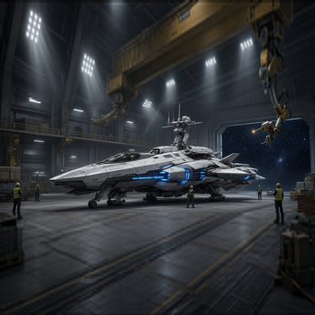 | 기본전함 레인저 CM.I | 1 | 72 | 88 | 11 | patrol | 0 (기본 지급) |
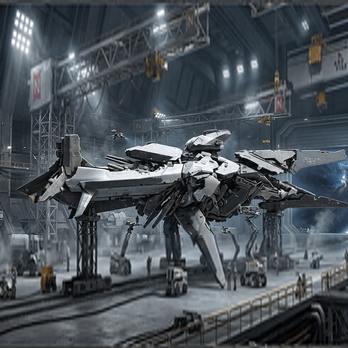 | 기본전함 파이터 Mk.I | 1 | 560 | 210 | 16 | line | 0 (기본 지급) |
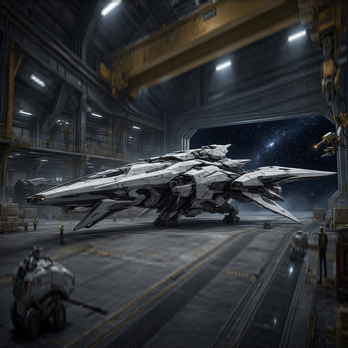 | 스트라이커 Mk.II | 7 | 400 | 95 | 9 | raider | 250,000 |
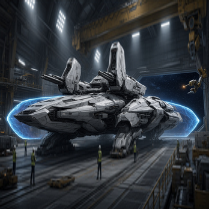 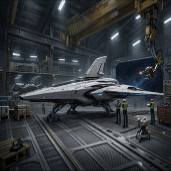 | 가디언 구축함 / 헌터 구축함 | 15 | 600 / 450 | 250 / 125 | 18 / 10 | patrol / raider | 1,200,000 |
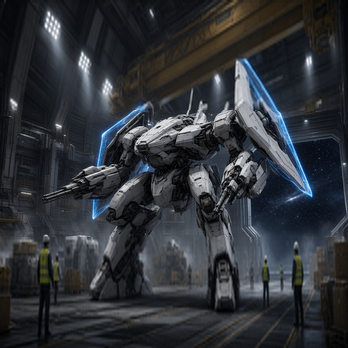 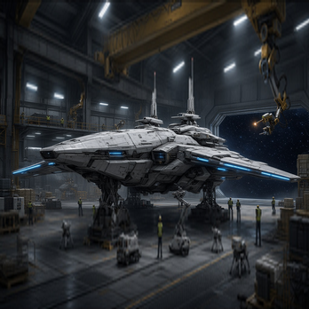 | 가디언 구축함 Mk.II / 헌터 구축함 Mk.II | 25 | 580 / 480 | 220 / 135 | 17 / 11 | line / raider | 1,800,000 |
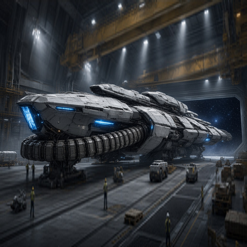 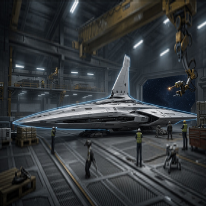 | 오라클 순양함 / 섀도우 순양함 | 31 | 600 / 470 | 235 / 140 | 17 / 11 | siege / patrol | 5,000,000 |
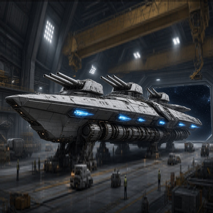 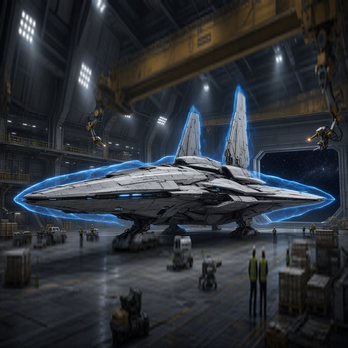 | 오라클 순양함 Mk.II / 섀도우 순양함 Mk.II | 40 | 610 / 490 | 240 / 148 | 17 / 12 | siege / patrol | 7,500,000 |
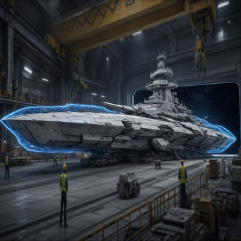 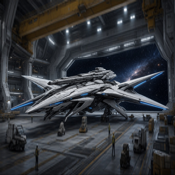 | 소버린 순양전함 / 랩터 순양전함 | 52 | 620 / 500 | 245 / 155 | 18 / 12 | siege / raider | 15,000,000 |
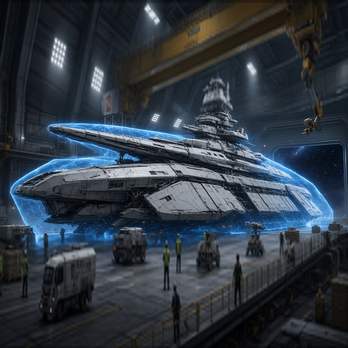 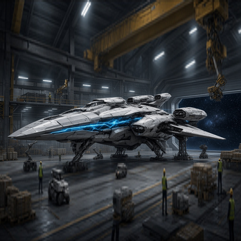 | 소버린 순양전함·완성형 / 랩터 순양전함·완성형 | 60 | 640 / 520 | 255 / 165 | 18 / 13 | siege / raider | 강화 정점 |
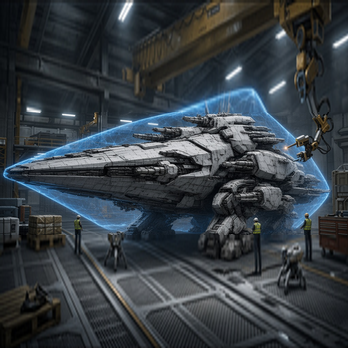 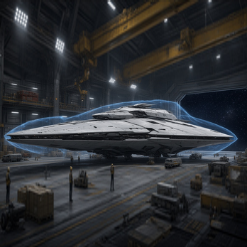 | 드레드노트 / 팬텀 드레드노트 | 65 | 680 / 540 | 265 / 175 | 19 / 13 | siege / patrol | 25,000,000 |
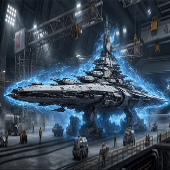 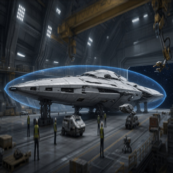 | 슈퍼캐피털 / 팬텀 슈퍼캐피털 | 72 | 800 / 580 | 295 / 190 | 20 / 14 | line / raider | 50,000,000 |
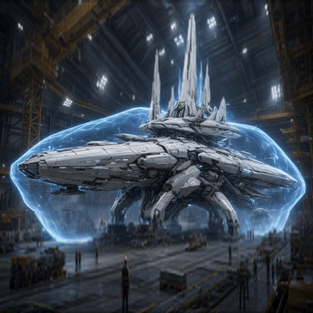 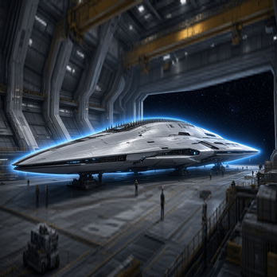 | 아펙스 레전드 / 팬텀 레전드 | 80 | 880 / 620 | 320 / 205 | 21 / 15 | line / patrol | 100,000,000 |
「완성형」은 구매가 아니라 순양전함을 끝까지 강화한 정점 단계다. 별도로 웨이브 디펜스 테스트 전용 「웨이브 디펜스 전함」(HP 3,700·실드 1,500)이 상점에 상시 진열된다.
플레이어 함선 갤러리
선체 6원형
플레이어·NPC 함선 293척 전체가 아래 6개 선체 중 하나를 공유한다.
patrol
가장 많이 쓰이는 경·중형 순찰 프레임 (192척)
raider
기동형 습격 프레임 (35척)
line
플레이어 최상위 라인의 주력함 프레임 (30척)
siege
순양함~드레드노트급 공성 프레임 (15척)
research
「블루 플릿」 등 연구/모의전용 프레임 (11척)
carrier_light
「서바이벌 포드」 경량 캐리어 (10척)
NPC 함대와 진영
NPC 함선은 소속 본성계별로 Invader / Interdictor / Pursuer / Raider / Hunter 등 역할별 이름 변형을 갖는다. 아르카디아·드라코 성운·솔라 항구·미네르바·베가 전초기지·뉴에덴·아이언 크로스·오메가 스테이션·헬리오스·시리우스, 그리고 분쟁지역 클랜 「나이트폴(홍월/Crimson Moon)」까지 총 11개 본성계 소속이 등록돼 있다.
전체 함선 목록 — 293척
npc_ai_ships.csv 전체다. 플레이어 12함급을 포함해 모든 NPC 함선의 본성계·선체·스탯을 담았다.
웨이브 디펜스 침입자
웨이브 디펜스 모드는 npc_wave_invader_t1부터 t30까지 30단계 침입자를 쓴다.
모두 기초 스탯(HP 80·실드 40·장갑 8)은 동일하고, 장착 무기만 티어가 오를수록 기본 레이저에서
후반 「싱귤래리티/코스메가 로켓」급으로 강해진다 — 전투 난이도는 스탯이 아니라 무기로 오른다.
장비 슬롯
모든 함선은 ARMOR · ENGINE · SYSTEM · EX_01 4개 기본 슬롯을 가지며, 57종 장비 카탈로그에 따라 최대 EX_04·FIGHTER까지 확장된다.
tables/content/npc_ai_ships.csv(293행) · npc_capital_ship_equip_slots.csv · docs/planet/_000_ARCFIRE_SHIPYARD_UPGRADE_UI_SPEC_v1.md
이 문서에 대한 의견